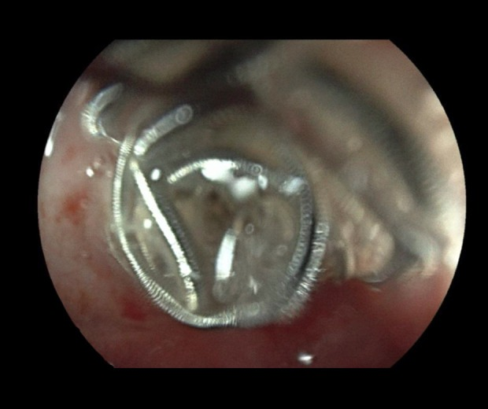
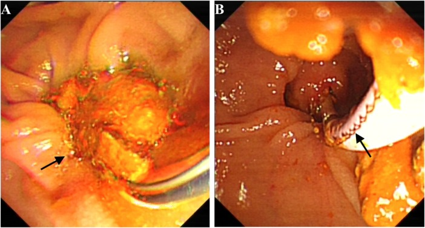
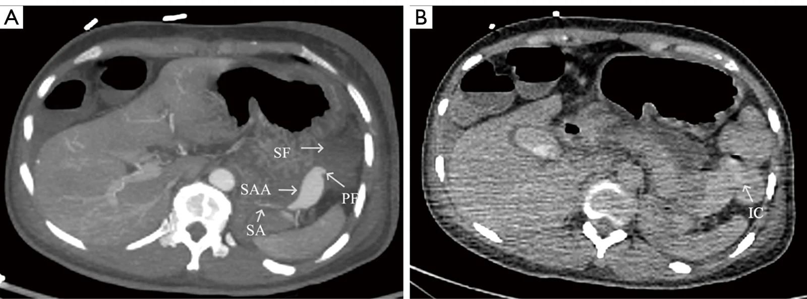
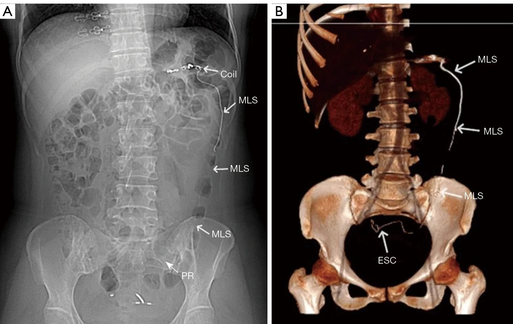
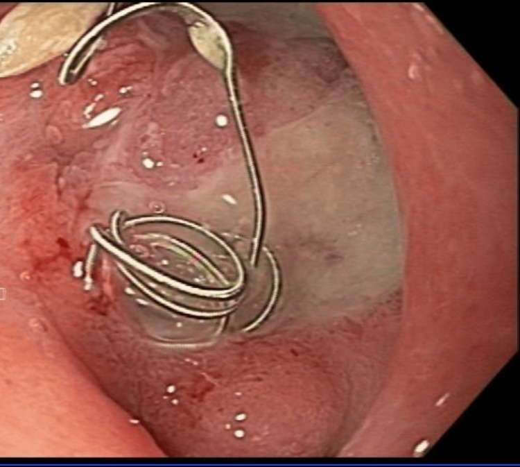
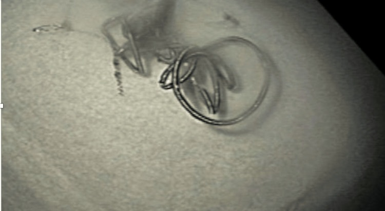
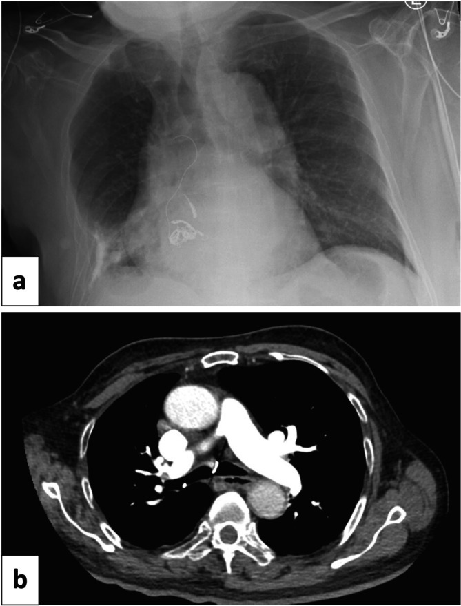

1831 — Coil di trú & xuyên thành sau nút mạch tạng / Coil migration & coil erosion after visceral artery embolization
Tags: pattern:di-tru-coil pattern:xuyen-thanh pattern:di-vat-lieu-nut pattern:ro-dong-ruot vung:mach-tang vung:ta-trang vung:dai-trang vung:duong-mat vung:phe-quan protocol:CTA protocol:X-quang-bung protocol:noi-soi-tieu-hoa protocol:ERCP protocol:noi-soi-phe-quan
Mức chắc chắn (certainty): tổng hợp y văn (literature synthesis) — ghép 1 tổng quan phình giả mạch tạng (Medicina 2025, PMC12299956, CC BY), 1 đoàn hệ 26 bệnh nhân/29 túi phình quanh tụy (Sci Prog 2026, PMC12966526, CC BY-NC), 1 tổng quan hệ thống EUS (Cureus 2026, PMC13413726, CC BY 4.0) và 7 ca nguyên văn di trú/xuyên thành coil (PMC13654179, PMC13422218, PMC12040520, PMC12983898, PMC11198983, PMC7283936, PMC6791628). Không có nghiên cứu đoàn hệ nào đo tỉ lệ di trú coil sau nút mạch tạng → mọi tỉ lệ dưới đây ghi đúng nguồn, phần chưa có ghi "chưa rõ".
Câu chốt: coil không nằm yên vĩnh viễn. Coil có thể di trú trong lòng mạch (xuôi dòng → tắc nhánh xa, vào tim/phổi) hoặc xuyên qua thành mạch vào ống rỗng (tá tràng, đại tràng, đường mật, phế quản) tạo rò + chảy máu tái phát + nhiễm trùng. Khoảng cách thời gian rất rộng: 13 ngày → 34 tháng; dấu hiệu sớm nhất trên X-quang/CT là coil bị duỗi thẳng ("unwinding") và có đoạn dây kim loại nằm NGOÀI bó coil. Không triệu chứng → theo dõi được (đã có ca đào thải tự nhiên sau 5 tháng); lộ trong lòng ống tiêu hóa → nội soi cắt/lấy; rò, thủng, chảy máu không kiểm soát → mổ.
1. Tổng quan bệnh học – cơ chế hình ảnh
1.1 Vì sao coil "chui" ra khỏi mạch
- Bối cảnh mô học: phần lớn túi được nút là giả phình (pseudoaneurysm) sau viêm tụy, nhiễm trùng, mổ hoặc xạ trị — thành không có lớp áo giữa/cơ trơn, chỉ là mô xơ + cục máu + nang giả. Coil tựa vào một thành mỏng, viêm, thiếu máu, lại đập theo mạch 90–130 lần/phút → cọ xát liên tục.
- Bốn yếu tố đẩy coil ra ngoài: (1) cổ túi rộng và nhồi coil không đủ chặt (inadequate packing); (2) dịch tụy giàu enzyme tiêu protein và ổ hoại tử sát túi; (3) nhiễm trùng tại ổ dịch làm mềm thành; (4) đoạn mạch nhỏ, xoắn, coil quá dài/ quá cứng tạo vòng cung đẩy vào thành. Tổng quan mạch tạng ghi rõ: di trú gặp nhiều hơn ở túi cổ rộng hoặc nhồi không đủ, và biện pháp giảm nguy cơ là balloon remodeling / stent-assisted coiling (PMC12299956).
- Di trú ≠ xuyên thành: migration = coil bật khỏi túi vào lòng mạch, trôi xuôi dòng; erosion = coil xuyên qua thành vào cơ quan rỗng (tá tràng, đại tràng, đường mật, phế quản). Hai cơ chế có thể nối tiếp nhau: coil lộ ra khỏi túi → mô xơ quanh mạch dính vào thành ruột → rò động–ruột.
- Tần suất: chưa rõ — không có đoàn hệ nào báo tỉ lệ. Đoàn hệ 26 bệnh nhân/29 túi phình quanh tụy nút mạch có 0 ca di trú trong trung vị 48 tháng (PMC12966526); ngược lại y văn chỉ toàn ca lẻ, nghĩa là tỉ lệ thấp nhưng tử số không bằng 0. Đừng vì "hiếm" mà bỏ qua khi bệnh nhân có triệu chứng mới.
1.2 Vì sao CT/X-quang thấy được (vật lý)
- Coil là kim loại cản quang cực mạnh → trên CT tạo streak artifact và trên X-quang là hình xoắn/đường kim loại đậm. Chính vì quá đậm, artifact có thể che mất phần coil đã lộ ra ngoài thành nếu chỉ xem một lát cắt ngang.
- Cách đọc đúng: dùng MIP + dựng hình thể tích (VR) và cửa sổ xương, đối chiếu phim/CT lần trước. Bó coil đúng vị trí có hình khối tròn, gọn, không có dây thò ra; khi di trú, xuất hiện cấu trúc dạng dây (linear structure) chạy xa khối coil — đây là dấu chốt trên CT (ca PMC13654179: dây kim loại 45 cm chạy từ đại tràng xuống trực tràng, VR thấy rõ).
- Dấu sớm trên X-quang: coil bị kéo giãn/duỗi thẳng ("unwinding") — ca ho ra máu sau nút mạch phổi có coil duỗi một phần trên phim ngực trước khi CT xác nhận coil đã vào carina (PMC12040520).
- Đậm độ/tín hiệu không dùng để chẩn đoán — coil đậm hơn xương, không đo HU có ý nghĩa; điều cần đo là vị trí tương đối so với thành mạch/ống rỗng và khoảng cách tới lòng ruột.
1.3 Ngưỡng định lượng nằm lòng
| Đại lượng | Số liệu | Nguồn |
|---|---|---|
| Tỉ lệ phình giả mạch tạng trong dân số | 0,1–0,2%; động mạch lách 60–65% | PMC12299956 |
| Nguy cơ vỡ / tử vong sau vỡ | vỡ tới 50%; tử vong sau vỡ 15–40% | PMC7035033 |
| Tử vong nếu không điều trị | tới 90% | PMC12299956 |
| Đoàn hệ nút mạch quanh tụy | 26 bệnh nhân/29 túi, kỹ thuật 88,5%, 0 di trú coil, tái phát/hẹp 4,0% mỗi loại, theo dõi 48 tháng | PMC12966526 |
| Thời gian tới khi phát hiện di trú | 13 ngày (tá tràng) · 2 tháng (xuyên thành dạ dày) · 2 năm (đường mật) · 34 tháng (đại tràng) | PMC12983898, PMC7283936, PMC13422218, PMC13654179 |
| Kích thước túi trong ca di trú | 4,2 cm (động mạch lách) · 2,6 × 2,4 cm (tụy–tá tràng) | PMC13654179, PMC12851075 |
| Chiều dài coil lộ ra ngoài | 45 cm dây kim loại thò ra hậu môn | PMC13654179 |
| Ca theo dõi bảo tồn dài nhất | coil chưa đào thải sau 21 tháng, triệu chứng ngắt quãng | PMC12983898 |
| Thời gian đào thải tự nhiên | coil xuyên thành dạ dày tháng thứ 2, dây vào lòng dạ dày tháng 4, không còn thấy tháng 5 | PMC7283936 |
2. Mẫu hình + chẩn đoán phân biệt theo vị trí (gamut)
2.1 Tá tràng – dạ dày (vị trí hay gặp nhất: GDA, vị–mạc nối, vị trái)
- Coil lộ qua ổ loét: nội soi thấy vòng/sợi coil nằm trong đáy ổ loét Forrest III, quanh coil là mô loét xơ; bệnh nhân xuất huyết tiêu hóa tái phát dù trước đó đã nút mạch thành công.
- Cơ chế: túi giả phình GDA nằm sát hành tá tràng, coil nhồi trong túi ăn mòn qua lớp cơ ruột → coil lộ vào lòng; máu có thể chảy lại từ nhánh bàng hệ hoặc từ đầu coil sắc cọ vào niêm mạc.
- Hai thái cực xử trí đều có thật: (1) cắt coil bằng kéo nội soi + lấy bằng kẹp răng chuột, ổ loét lành ~50% sau 3 tháng (PMC11198983); (2) không lấy vì nguy cơ chảy máu, theo dõi 21 tháng coil vẫn nằm tại góc hành–D2 (PMC12983898).

Nội soi: coil nằm ở góc hành tá tràng – D2, một phần chìm trong niêm mạc loét; bệnh nhân 90 tuổi được theo dõi bảo tồn, coil chưa đào thải sau 21 tháng. Nguồn: Am J Case Rep 2026 (PMC12983898), Fig. 1 — CC BY-NC-ND 4.0, nguyên bản.2.2 Đại tràng – trực tràng
- Rò động mạch lách–đại tràng rồi di trú xuyên đại tràng: CT thì muộn thấy cản quang trong lòng đại tràng góc lách (dấu IC — intraluminal contrast) chứng minh thông trực tiếp túi–lòng ruột; 34 tháng sau bệnh nhân thấy dây kim loại thò ra hậu môn, CT/VR cho thấy coil chạy từ đại tràng xuống trực tràng (PMC13654179).
- Bài học: "phình giả đã nút kín" không loại trừ đường rò đã hình thành — dấu cản quang trong lòng ruột ở thì muộn là chốt.
2.3 Đường mật
- Di trú vào ống mật chủ sau nút động mạch gan phải: 2 năm sau, bệnh nhân tắc mật/cholangitis tái phát; hình ảnh học khó vì bóng kim loại chồng lên khung gan, không thấy rõ khuyết thuốc trên cholangiography; ERCP mới thấy sợi coil lộ trong lòng ống mật và lấy ra (PMC13422218).
- Bẫy: trên CT, coil trong cuống gan có thể bị đọc là "coil đúng chỗ" — phải tìm dấu hiệu tắc mật (giãn đường mật trong gan, dày thành ống mật) mới nghĩ tới di trú.

ERCP: sợi coil lộ trong lòng ống mật (mũi tên, A) và được lấy ra bằng dụng cụ nội soi (B). Coil di trú 2 năm sau nút động mạch gan phải, gây cholangitis tái phát. Nguồn: Front Surg 2026 (PMC13422218), Fig. 3 — CC BY, nguyên bản.2.4 Phế quản – đường thở
- Coil xuyên từ động mạch phổi vào phế quản: bệnh nhân ho ra máu, coil thấy ở carina trên CT; X-quang trước đó có coil duỗi một phần (PMC12040520).
- Xử trí nội soi phế quản: cắt phần coil lộ trong lòng bằng kéo nội soi rồi lấy ra — nhưng có thể tái di trú sau sinh thiết xuyên thành ngực/EBUS vì mô quanh coil đã yếu (PMC12040520).
2.5 Trong lòng mạch xa (thuyên tắc không đích)
- Coil trôi xuôi dòng → tắc nhánh tạng xa (lách/gan/ruột), hoặc về nhĩ phải/thất phải và tuần hoàn phổi; y văn có ca lấy coil từ nhĩ phải bằng đường qua da và ca di trú muộn vào thất phải phải mổ (PMC12905704, PMC13222107).
- Khác với coil đặt đúng trong túi: coil đúng vị trí không di chuyển giữa 2 lần chụp; coil trôi mất khỏi túi và xuất hiện ở nhánh xa trên CTA.
2.6 Trong ổ hoại tử / nang giả tụy (không phải di trú, nhưng là "bàn đạp" của rò)
- Khi coil được đặt trong túi giả nằm giữa ổ hoại tử, CT thấy coil ngoài lòng mạch — đây là đúng kế hoạch, không phải biến chứng. Nhưng chính vị trí này dễ xuyên vào tá tràng/dạ dày vì không có thành mạch che.
- Phân biệt bằng DSA/CTA thì động mạch: coil trong túi vẫn có cổ thông với mạch; coil trong ổ dịch không có cổ.
3. Bảng so sánh phân biệt (ma trận đối chiếu)
| Thực thể (entity) | Hình ảnh điển hình | Chốt vào (rule-in) | Chốt loại (rule-out) | Gợi ý xác nhận |
|---|---|---|---|---|
| Coil đúng vị trí | Bó coil gọn, tròn, không dây thò ra; không đổi giữa 2 lần chụp | Bó coil kín trong túi + không dây ngoài + không đổi trên phim cũ | Có dây kim loại chạy xa bó coil → đã di trú | So phim/CT lần trước, MIP |
| Coil di trú trong lòng mạch | Coil mất khỏi túi, xuất hiện ở nhánh xa; thiếu máu cơ quan | Coil ở nhánh xa + mất hình coil tại túi | Coil vẫn trong túi, chỉ artifact → không phải | CTA 2–3 thì + DSA |
| Coil xuyên tá tràng/dạ dày | Sợi coil trong đáy ổ loét trên nội soi; CT: coil ngoài thành mạch, sát/trong lòng ruột | Nội soi thấy coil trong lòng + ổ loét Forrest III + tiền sử nút GDA | Nội soi âm + coil còn trong túi → chưa xuyên | Nội soi tiêu hóa trên; CT lát mỏng |
| Coil xuyên đại tràng | Cấu trúc dây kim loại dài trong đại tràng trên CT/VR; có thể thò ra hậu môn | Dây kim loại chạy trong lòng đại tràng/trực tràng | Coil nằm ngoài ruột, không có dây trong lòng → chưa xuyên | CT bụng–chậu + VR; nội soi đại tràng |
| Coil trong đường mật | Bóng kim loại trong ống mật, giãn đường mật trong gan, cholangitis tái phát | ERCP thấy coil trong lòng ống mật | Bóng kim loại ở cuống gan nhưng không có tắc mật → chưa chắc | ERCP; MRCP; CT 3 thì |
| Coil trong phế quản | Coil ở carina/phế quản gốc trên CT; X-quang có coil duỗi | Nội soi phế quản thấy coil trong lòng | Coil nằm trong nhu mô/mạch, không vào lòng khí → chưa xuyên | Nội soi phế quản; CT ngực |
| Rò động–ruột (arterial-enteric fistula) | Túi giả sát ruột, khí trong thành mạch hoặc cản quang trong lòng ruột thì muộn, chảy máu ồ ạt | Cản quang lòng ruột ở thì muộn + túi sát ruột + chảy máu tái phát | Không có cản quang trong ruột, không khí trong mạch → chưa rò | CTA 3 thì; nội soi; mổ |
| Clip/thức ăn/viên thuốc giả | Cấu trúc kim loại rời, không có bó coil; bệnh nhân không nút mạch | Tiền sử nút mạch + bó coil tại chỗ | Không tiền sử can thiệp, hình dạng clip → không phải coil | Hỏi bệnh sử; so phim cũ |

Trái (A): CT thì động mạch — túi giả phình động mạch lách 4,2 cm (SAA) sát góc lách (SF), mặt phẳng mỡ với ruột mất (PF = đường rò giả định). Phải (B): thì muộn — cản quang trong lòng đại tràng góc lách (IC) = bằng chứng thông trực tiếp túi–ruột. Nguồn: Quant Imaging Med Surg 2026 (PMC13654179), Fig. 2 — CC BY-NC-ND 4.0, nguyên bản.
Trái (A): phim bụng — bó coil còn ở hạ vị trái, kèm cấu trúc dây kim loại (MLS) chạy dọc khung đại tràng xuống tiểu khung (PR = đường đi giả định). Phải (B): dựng hình thể tích — coil đã vào lòng đại tràng sigma/trực tràng (ESC). Bệnh nhân thấy 45 cm dây kim loại thò ra hậu môn. Nguồn: Quant Imaging Med Surg 2026 (PMC13654179), Fig. 4 — CC BY-NC-ND 4.0, nguyên bản.Dấu hiệu hình ảnh chốt (đọc nhanh)
- "Coil phải gọn": một bó coil đúng chỗ không có dây thò ra; bất kỳ đoạn dây thẳng nào ngoài bó = nghi di trú/xuyên thành.
- Đổi vị trí giữa 2 lần chụp là dấu mạnh nhất — luôn so với phim/CT ngay sau thủ thuật.
- Cản quang trong lòng ruột ở thì muộn = rò đang hoạt động, không phải "tồn lưu thuốc".
- Nội soi là tiêu chuẩn vàng khi coil nghi ở ống tiêu hóa: thấy coil trong lòng là chốt, đồng thời là đường lấy.
4. Protocol chụp/can thiệp + hệ phân độ
4.1 Phòng ngừa ngay trong lần nút mạch (quan trọng hơn chẩn đoán muộn)
- Chọn kỹ thuật theo hình thái túi: túi cổ hẹp → nhồi kín túi (sac packing); túi cổ rộng → balloon remodeling / stent-assisted coiling hoặc vascular plug thay vì coil rời (PMC12299956).
- Với túi sát ống tiêu hóa (GDA, vị–mạc nối): ưu tiên vascular plug hoặc trapping hai đầu thay vì coil nhồi trong túi sát thành ruột; nếu buộc dùng coil, tránh coil quá dài, kiểm tra coil không thò ra cổ túi ở thì cuối.
- Khi có ổ hoại tử/tụy dịch sát túi: điều trị ổ dịch (dẫn lưu) và theo dõi sát vì đây là môi trường tiêu protein làm coil dễ xuyên.
- Ghi lại "trạng thái cuối" trong báo cáo: số coil, chiều dài, vị trí đầu coil so với cột mạch, có plug/stent hay không — đây là mốc so sánh cho mọi lần chụp sau.
4.2 Theo dõi sau thủ thuật
- Không có lịch theo dõi chuẩn cho coil mạch tạng. Đề xuất thực hành (dựa trên các ca đã báo): X-quang bụng hoặc CT tại 1–3 tháng ở bệnh nhân nguy cơ cao (túi cổ rộng, coil sát ruột, viêm tụy hoại tử, nhiễm trùng), sau đó mỗi 6–12 tháng nếu ổn định.
- Chụp ngay khi có triệu chứng mới: đau bụng kéo dài, xuất huyết tiêu hóa tái phát, sốt/cholangitis, ho ra máu, thiếu máu không giải thích → CTA bụng 3 thì (hoặc CT ngực nếu nghi đường thở).
- Kỹ thuật CT: lát 0,5–1 mm, không cản quang + thì động mạch + thì cổng, dựng MIP/VR, cửa sổ xương; so trực tiếp với CT/phim ngay sau nút mạch.
4.3 Xử trí theo vị trí và triệu chứng
flowchart TD
A[Coil ngoài túi / dây kim loại bất thường trên CT-Xquang] --> B{Có triệu chứng?}
B -->|Không| C[Theo dõi: Xquang-CT 1-3 tháng, dặn tái khám khi đau-xuất huyết-sốt]
B -->|Có| D{Vị trí?}
D -->|Trong lòng ống tiêu hóa| E[Nội soi: cắt coil bằng kéo + lấy bằng kẹp răng chuột]
D -->|Đường mật| F[ERCP: lấy coil, đặt stent nếu hẹp]
D -->|Phế quản| G[Nội soi phế quản: cắt phần lộ, lấy ra]
D -->|Trong lòng mạch xa| H[CTA xác định nhánh tắc; cân nhắc lấy coil nếu thiếu máu cơ quan]
D -->|Rò-thủng-chảy máu không cầm| I[Mổ: cắt đoạn ruột/thắt mạch/khâu rò]
E --> J[Kiểm tra: không còn coil lộ + Hb ổn + nội soi lại 4-8 tuần]
F --> J
G --> J
H --> J
I --> J
- Nội soi lấy coil: chỉ khi coil lộ rõ trong lòng và không có dấu rò/thủng; dùng kéo nội soi cắt phần lộ rồi kẹp răng chuột kéo ra — không kéo mạnh vì có thể rách thành ruột hoặc kéo tuột coil khỏi mạch (PMC11198983, PMC6095728).
- Theo dõi bảo tồn: chấp nhận được ở bệnh nhân không triệu chứng/ triệu chứng nhẹ, đã có ca đào thải tự nhiên trong 5 tháng và ca nằm yên 21 tháng (PMC7283936, PMC12983898) — nhưng phải dặn bệnh nhân theo dõi phân và tái khám khi đau/sốt.
- Mổ: rò động–ruột, thủng, chảy máu không kiểm soát, cholangitis tái phát nhiều lần, coil trong ổ nhiễm trùng — ca rò động mạch gan–tá tràng do coil di trú phải khâu rò + cắt động mạch gan chung + thắt thân tạng (PMC12817484); ca rò động mạch lách–đại tràng phải mổ lấy coil và xử lý đoạn đại tràng (PMC13654179).
5. Biến thể bình thường và cạm bẫy
- Streak artifact che mất đầu coil: trên lát cắt ngang, artifact kim loại có thể trông như "coil vẫn trong túi" — luôn dựng MIP/VR và so phim cũ.
- Coil trong ổ hoại tử là đúng kế hoạch, không phải di trú; nhưng chính nó dễ xuyên vào tá tràng — đọc kèm dấu hiệu viêm/dính quanh ruột.
- "Coil biến mất" khỏi vị trí cũ có thể do di trú, đào thải qua phân, hoặc bị che bởi artifact/khung xương — cần phim bụng + CT trước khi kết luận.
- Coil trong lòng đại tràng có thể gây thủng muộn: không được kéo coil qua nội soi khi chưa xác định hai đầu tự do; có ca phải mổ vì dây coil xuyên qua thành (PMC13654179).
- Coil ở carina dễ bị đọc là "dị vật hít vào": hỏi tiền sử nút mạch động mạch phổi, tìm coil duỗi trên phim cũ (PMC12040520).
- Không loại trừ di trú khi X-quang âm: coil nhỏ, nằm sau khung xương hoặc đã đào thải; triệu chứng mới + tiền sử nút mạch = chỉ định CT.
- Đừng nhầm clip phẫu thuật/thức ăn với coil: clip không có dây xoắn và không đổi vị trí; hỏi bệnh sử can thiệp mạch.
- Túi giả đã "nút kín" vẫn có thể đã rò: dấu cản quang trong lòng ruột ở thì muộn xuất hiện trước khi coil di trú nhiều tháng — đọc thì muộn, đừng chỉ đọc thì động mạch.
6. Tự lượng giá — Blind Quiz
Ca 1 — Nữ 40 tuổi, xuất huyết tiêu hóa dưới ồ ạt, không tiền sử bệnh; CT bụng có túi cạnh đuôi tụy.
- Hỏi: mô tả tổn thương ở (A)? Dấu hiệu nào ở (B) chứng minh đã có đường rò vào ruột? Vì sao "đã nút kín" vẫn phải theo dõi dài hạn?
Bấm để hiện đáp án (findings + chẩn đoán)
- Findings: (A) túi 4,2 cm phình giả động mạch lách, mặt phẳng mỡ với góc lách mất, có đường rò giả định; (B) thì muộn có cản quang trong lòng đại tràng góc lách (IC) = thông trực tiếp túi–lòng ruột.
- Chẩn đoán: rò giả phình động mạch lách–đại tràng; đã nút 6 coil động mạch lách gần, không nhồi túi.
- Vì sao theo dõi dài hạn: đường rò vẫn tồn tại sau khi nút gần → 34 tháng sau coil di trú qua đường rò vào đại tràng, 45 cm dây thò ra hậu môn, phải mổ.
- Nguồn ảnh: Quant Imaging Med Surg 2026 (PMC13654179), Fig. 2 — CC BY-NC-ND 4.0.
Ca 2 — Nam 55 tuổi, tiền sử loét tá tràng chảy máu đã nút coil GDA; nay phân đen, Hb giảm 2 g/dL.

- Hỏi: dấu hiệu trong ảnh? Vì sao không được kéo mạnh? Cách lấy?
Bấm để hiện đáp án (findings + chẩn đoán)
- Findings: vòng coil kim loại nằm trong đáy ổ loét Forrest III, xung quanh là mô loét xơ, không thấy máu đang phun.
- Chẩn đoán: coil xuyên thành vào lòng tá tràng sau nút GDA — nguyên nhân chảy máu tái phát.
- Cách lấy: cắt phần coil lộ bằng kéo nội soi, rồi kẹp răng chuột kéo ra; không kéo mạnh vì coil còn neo trong mô/mạch, kéo mạnh có thể rách thành ruột hoặc tuột coil khỏi mạch.
- Kết quả: hết melena, ổ loét lành ~50% sau 3 tháng.
- Nguồn ảnh: Cureus 2024 (PMC11198983), Fig. 1 — CC BY 4.0.

Đoạn coil đã cắt và lấy ra: vòng xoắn còn nguyên, đầu coil sắc — chính đầu này cọ vào niêm mạc gây chảy máu tái phát. Nguồn: cùng bài, Fig. 2 — CC BY 4.0.Ca 3 — Bệnh nhân ho ra máu sau nút mạch giả phình động mạch phổi; phim ngực có "sợi dây" bất thường.

- Hỏi: dấu hiệu trên phim (a)? CT (b) xác nhận gì? Xử trí nội soi và rủi ro?
Bấm để hiện đáp án (findings + chẩn đoán)
- Findings: (a) coil duỗi một phần, đoạn dây chạy lên carina; (b) CT ngực — coil trong lòng phế quản gốc phải, sát carina.
- Chẩn đoán: coil xuyên thành mạch vào đường thở sau nút mạch động mạch phổi.
- Xử trí: nội soi phế quản cắt phần coil lộ bằng kéo nội soi và lấy ra; nhưng có thể tái di trú sau sinh thiết xuyên thành ngực/EBUS vì mô quanh coil đã yếu.
- Nguồn ảnh: Respirol Case Rep 2025 (PMC12040520), Fig. 2 — CC BY 4.0.
Bài liên quan chéo
- 1819 – Chảy máu tiêu hóa muộn do giả phình động mạch tạng
- 920 – Nút mạch cầm máu tiêu hóa
- 1832 – Nút mạch giả phình tạng dưới hướng dẫn EUS
- 1811 – Loét & hẹp thực quản–dạ dày–tá tràng sau TACE/TARE
- 900 – Đại cương IR: kim, đông máu & cửa sổ chọc
Ảnh & giấy phép
1831_di-tru-coil_CT_PMC13654179-f2.jpg,1831_di-tru-coil_CT-PR_PMC13654179-f4.jpg— Quant Imaging Med Surg 2026 (PMC13654179), CC BY-NC-ND 4.0, nguyên bản.1831_di-tru-coil_Noi-soi_PMC12983898-f1.jpg— Am J Case Rep 2026 (PMC12983898), CC BY-NC-ND 4.0, nguyên bản.1831_di-tru-coil_Noi-soi_PMC11198983-f1.jpg,1831_di-tru-coil_Noi-soi-sau-lay_PMC11198983-f2.jpg— Cureus 2024 (PMC11198983), CC BY 4.0.1831_di-tru-coil_XR-CT_PMC12040520-f2.jpg— Respirol Case Rep 2025 (PMC12040520), CC BY 4.0.1831_di-tru-coil_ERCP_PMC13422218-f3.jpg— Front Surg 2026 (PMC13422218), CC BY.- Chi tiết từng file + ghi chú phái sinh:
images/CREDITS.md.
Không dùng để chẩn đoán độc lập khi chưa có người hướng dẫn.